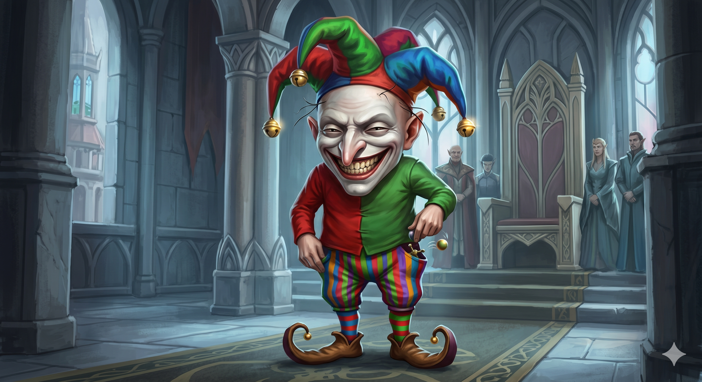

Appears in: Couch Potato Chaos (also referenced in Crisis)
Profile

- Appears in: Couch Potato Chaos (also referenced in Crisis)
- Aliases: Snickers, the Bumble
- Secret identity: Eidolon of mischief (one of four eidolons alongside Entropy, Catalyst, and Libra)
- Role at Brightwind: Royal adviser and jester to King Iolo
- Personality: Speaks exclusively in rhyme, setting him apart from every other character at Brightwind. Described as “chaotic and dangerous” as an adviser. Despite the danger, he is one of the few characters willing to speak plainly about existential threats — he tells uncomfortable truths wrapped in verse. The timeline casts him as “advisor, witness, and partial counterweight to Entropy’s influence.”
- Backstory: Connected to the Second Age event where Lorien Questgiver led the elves into Etheria and bargained with Entropy. The timeline states he “later stands near this legacy as advisor, witness, and partial counterweight to Entropy’s influence.” He holds a “pact mediator” relationship with Lorien, suggesting he played a role in the original bargain or its ongoing enforcement. As a fundamental cosmic entity, he is ancient — not a mortal who rose to his position through normal means. When or why he chose to disguise himself as a royal jester/adviser at Brightwind is unknown.
- Significant story events:
- The Lorien Pact (Second Age): Present during or shortly after the bargain between Lorien Questgiver and Entropy. Acts as pact mediator.
- Chapter 7 — The Jester and the King (Chaos): Explains the countdown to the court by delivering his rhyming prophecy about Entropy encircling the world and destroying all life. Earns the wiki’s note about being “one of the first people to plainly state what the countdown means.”
- Brightwind Revelations / Orb Quest: Listed among the characters involved when King Iolo’s court turns scattered danger into a mission to gather the elemental orbs.
- Chapter 14 — Snickers the Bumble (Chaos): Chapter named after him, indicating a significant focus on his character and identity.
- Epilogue (Chaos): Appears in the epilogue, though his exact role is unspecified.
- Chapter 2 (Crisis): Serves as royal jester and information source for King Iolo during the early search for Kiwi.
- Notable Quotes:
“He will encircle the world and give a great squeeze, he’ll squash out all life and crush it with ease. Naught will remain when he is all through, when the god of destruction has collected his due.” — Chapter 7, The Jester and the King. Snickers explains the countdown.
- Relationships: Adviser to King Iolo (described as “chaotic and dangerous”); pact mediator with Lorien Questgiver; opposes Entropy. Appears in all four Mermaid relationship diagrams in the wiki.
- Physical description: Snickers is short — about half the height of an elf — and is frequently mistaken for a goblin or a deformed dwarf. His most striking features are an elongated nose ending in a sharp point, eyes shaped like wide slits that never fully open, and a mostly bald head covered in only a few rogue hairs. His skin is clay white, leading most people to assume his face is painted, but it is not — he wears no makeup of any kind. By far his most distinctive characteristic is his grin: unnaturally wide and ever-present, described as “a deep, pervasive contortion of the face” expressing “sublime regalement at everything around him” — not a reassuring smile, but something unsettling. His clothing is loud and boisterous: a three-pronged hat with a myriad of colors and a jingle bell at the end of each prong, striped pants, a shirt of alternating red and green split down the middle, mismatched socks, and cloth shoes with an upward twirl at the toe. He keeps small toys (a bouncing ball and jacks) hidden in his pockets.
- References: Couch Potato Chaos: Chapter 7 - The Jester and the King, Chapter 14 - Snickers the Bumble, Epilogue | Couch Potato Crisis: Chapter 2